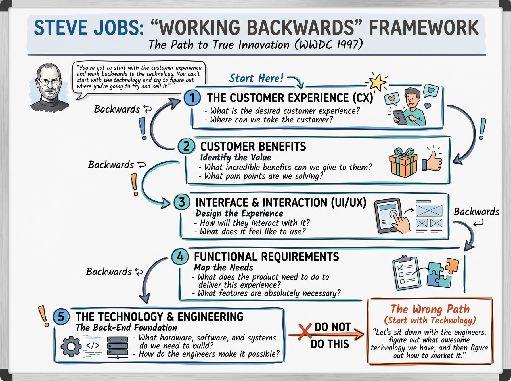

Working Backwards 5: Technology and Engineering
This is step 5 of 5. Plan on about 15 minutes with your team. There is no Canvas upload.
This is the last step. The technology serves the jobs you already named. It does not lead them.

Key idea
Start with the customer’s moment. Technology comes last.
The engine is under the floor. Guests should feel the ride. They should not have to tour the engine room first.
Questions
Answer these for your app. Read them out loud.
- What has to exist behind the screen?
- What can you borrow instead of building?
- Where did the team try to start with a tool?
- How does each piece of tech serve a job from step 4?
You can say this in one minute
The tech list serves steps 1 through 4. You can point to one idea you refused because it started with the tool.
The orange box on the chart is the wrong path. Do not sit down with the engineers, invent a clever tool, and then hunt for a customer.
© 2024 Bulldog Ventures Inc. All rights reserved.